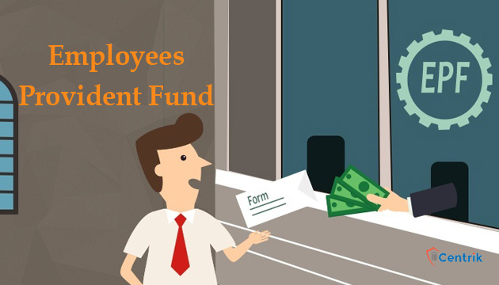

<div class="Insurance">
    <hr>
    <h3>Employee State Insurance</h3>
    <div class="section">
        <div class="details">
            {% for esi in page.esi %}
                <div class="details-item">
                    <i class="fa-regular fa-circle-check"></i>
                    <span>{{ esi }}</span>
                </div>
            {% endfor %}
        </div>
        
        
    </div>
    
    <div class="Provident">
        <hr>
        <h3>Employee Provident Fund</h3>
        <div class="section">
            <div class="details">
                {% for epf in page.epf %}
                    <div class="details-item">
                        <i class="fa-regular fa-circle-check"></i> <span>{{ epf }}</span>
                    </div>
                {% endfor %}
            </div>
            
        </div>
    </div>
</div>